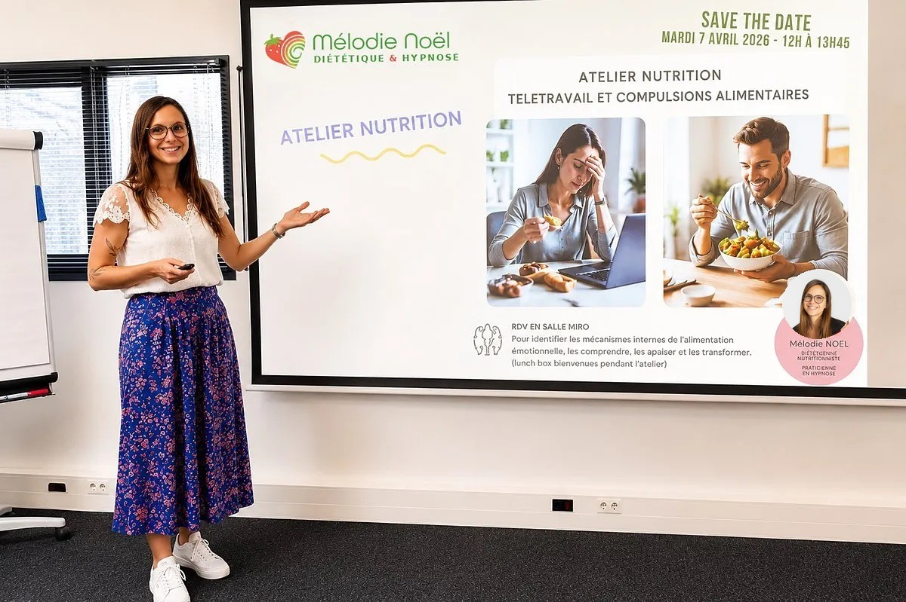

Séances Diététique
Un bilan nutritionnel complet puis des suivis réguliers pour la gestion du poids et aussi pour prendre en charge vos pathologies (diabète, cholestérol, troubles digestifs…).
Diététique & hypnose · Maisons-Alfort
Retrouvez énergie et fluidité en rééquilibrant votre assiette et votre esprit, sans prise de tête.
Mon approche
Parce que parfois, soigner ce que vous mangez ne suffit pas toujours : il faut aussi observer ce qui influence votre alimentation.
C'est là que mes deux métiers se rejoignent.
En route vers l'équilibre nutritionnel et émotionnel : la différence entre tenir un régime… et changer pour de bon.
Des repères clairs, fondés sur la science et adaptés à votre vie. Pas de régime triste : des astuces simples, tenables, sans interdits.
Un travail en douceur sur les émotions, les perceptions et les automatismes, pour que le changement vienne de l'intérieur, à votre rythme.
Pas envie d'hypnose ? Aucun souci, restons sur la diététique.
Pourquoi venir me voir
Quel que soit votre point de départ, on construit ensemble une démarche qui vous ressemble.
Perte ou prise de poids, durablement, sans obsession des chiffres avec un équilibre alimentaire simple et efficace.
Diabète, cholestérol, stéatose, intolérances : mieux vivre au quotidien et préserver sa santé.
Mieux dormir, Moins stresser… trouver des habitudes alimentaires pour ressourcer le corps et l’esprit.
Écouter ses sensations, se réconcilier avec son image et clore le sujet avec bienveillance.
Deuil, ménopause, grossesse… ces caps émotionnels importants qui bousculent l’alimentation et méritent un accompagnement.
Comprendre, apprivoiser puis transformer les pulsions pour une relation alimentaire sereine— sans frustration ni culpabilité.
Pour qui
Quel que soit l'âge ou le moment de vie, il y a une façon d'avancer qui vous correspond.
Comment travailler ensemble
Un bilan nutritionnel complet puis des suivis réguliers pour la gestion du poids et aussi pour prendre en charge vos pathologies (diabète, cholestérol, troubles digestifs…).
Un accompagnement pour soutenir votre démarche au-delà de l’assiette, lever ce qui bloque et améliorer votre relation à l’alimentation et au corps.
Des ateliers conviviaux pour s'informer— par exemple « alimentation & grossesse ». Pédagogie, plaisir et astuces à emporter.

En entreprise
Rééquilibrer l'assiette & l'esprit pour plus d'épanouissement et d'efficacité au travail.
Témoignages
« Lorsque j'ai rencontré Madame Noël, j'étais un peu désespérée de parvenir un jour à perdre du poids de façon durable. Aujourd'hui, après 4 mois de suivi, je reprends confiance. Entre les programmes alimentaires faciles à suivre et les séances d'hypnose, je vois clairement des changements dans mon comportement alimentaire. Ma relation à la nourriture est beaucoup plus apaisée. J'ai enfin le sentiment que ma perte de poids puisse être durable, sans que cela soit douloureux. J'ai perdu près de 10 kilos en 4 mois. Un grand merci à Madame Noël ! »
« Une qualité d'écoute rare et un accompagnement sans faille. »
« Mme Noël est une professionnelle compétente qui cerne les besoins de ses patients et répond à leurs attentes. Pour ma part, je suis un rééquilibrage alimentaire qui me fait perdre du poids sans avoir faim, sans fatigue et sans frustration. »
« C'était ma 3e séance d'hypnose avec Mélodie depuis le début de mon programme. De manière inattendue, l'hypnose est venue en complément pour m'aider de manière efficace dans mon rééquilibrage alimentaire. Elle m'a permis d'impacter de façon positive mon comportement alimentaire, d'améliorer le rapport à mon corps et de comprendre certains dysfonctionnements. Je recommande cette étape dans l'accompagnement 360° que propose Mélodie. »
« J'ai contacté Mme Noël il y a 6 mois pour une perte de poids. Je suis très satisfaite des résultats. Une diététicienne qui nous rassure, nous donne beaucoup de conseils avec bienveillance. Aucune crainte de jugement. Je vous recommande cette professionnelle. »

Premier rendez-vous
Tout commence par une conversation. L'occasion de comprendre vos besoins, vos défis et vos envies afin de construire un accompagnement sur mesure.
Allons chercher ensemble votre déclic !
Prendre rendez-vous